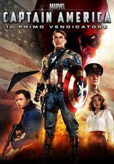
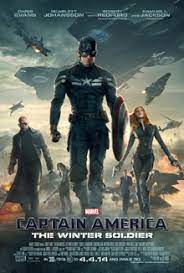

Captain America
Capitan America è un'icona indiscussa dell'universo Marvel e uno dei supereroi più amati di tutti i tempi. Il personaggio, creato da Joe Simon e Jack Kirby nel 1941, rappresenta l'ideale dell'uomo perfetto: coraggioso, leale e altruista. Steve Rogers, il vero nome del supereroe, è un giovane soldato che, grazie a un siero speciale, acquisisce una forza sovrumana e diventa Capitan America, il simbolo della giustizia e della libertà. Il personaggio ha avuto molte incarnazioni e interpreti nel corso degli anni, ma la sua figura è sempre stata associata a valori come l'eroismo, l'integrità morale e la difesa dei più deboli. Grazie al suo aspetto iconico e al suo carattere intramontabile, Capitan America è diventato un punto di riferimento per i fan del franchise Marvel e una figura ispiratrice per molte generazioni.
Film di Captein America
- Captain America: Il primo vendicatore (2011)
- Captain America: The winter soldier (2014)
- Captain America: Civil war (2016)
Captain America: Il primo vendicatore (2011)
Captain America: The winter soldier (2014)
Captain America: Civil war (2016)